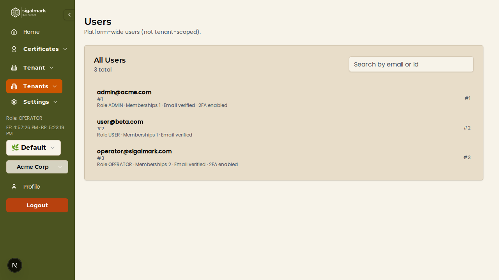
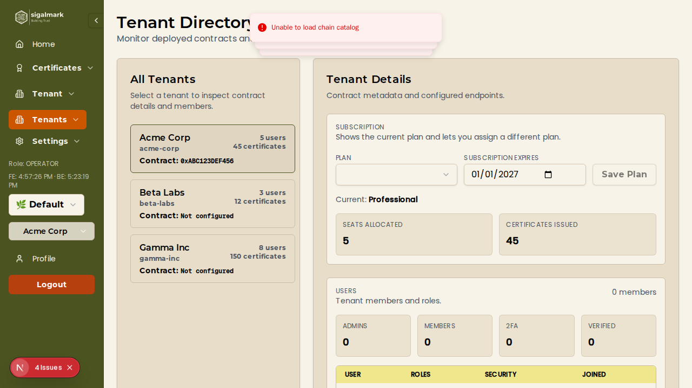
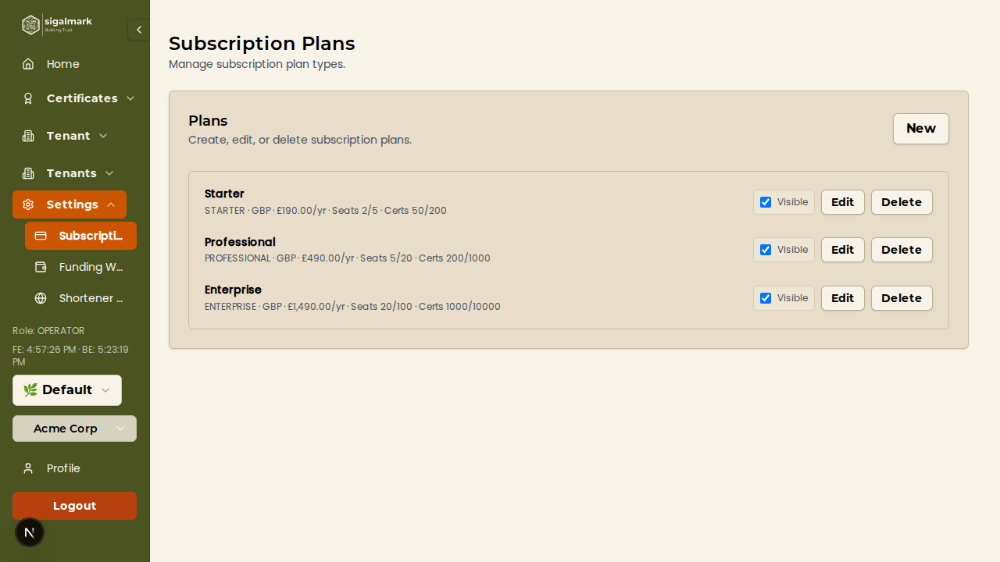
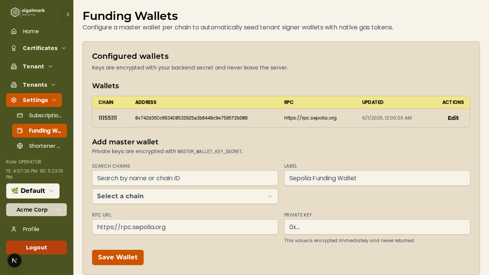
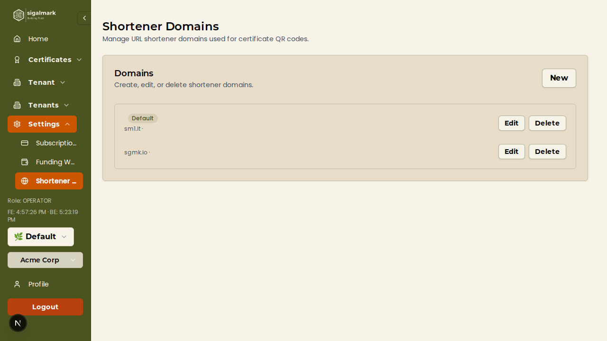
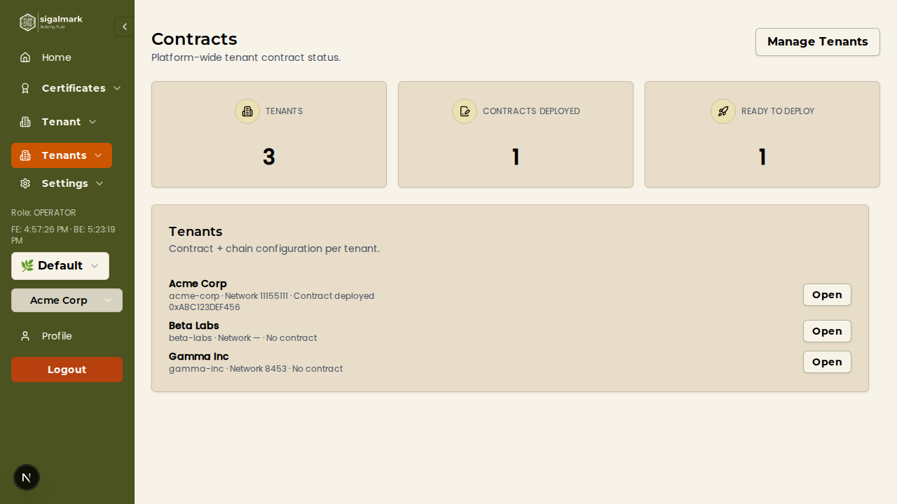

Operator (Superadmin) Tutorial
A comprehensive guide to platform-wide administration for Operators. Operators have the highest level of access and can manage all tenants, users, subscriptions, wallets, domains, and contract deployments across the entire Sigalmark platform.
Who is an Operator?
An Operator (also called Superadmin or Platform Admin) has unrestricted access to the entire Sigalmark platform. This includes all Admin and User capabilities, plus exclusive access to the platform-wide admin dashboard where you manage tenants, subscription plans, master wallets, shortener domains, and contract deployments.
The Platform Users page gives you a complete overview of every user registered on the Sigalmark platform, regardless of which tenant they belong to.
Viewing All Platform Users
- Navigate to the Admin section in the main sidebar.
- Click Users to open the platform users list.
- You will see a table displaying all registered users with the following columns:
- Email — The user's email address.
- Role — Their platform-level role (USER, ADMIN, or OPERATOR).
- Membership Count — The number of tenants this user belongs to.
- 2FA Status — Whether two-factor authentication is enabled.
- Email Verified — Whether the user has verified their email address.
Searching for Users
- Use the search bar at the top of the users list.
- Enter a user's email address or user ID to filter the list.
- Results will update in real time as you type.
Inspecting Individual User Details
- Click on any user row in the table to open their detail view.
- Review the user's full profile, including all tenant memberships, roles within each tenant, account creation date, and security settings.

2. Tenant Management
Tenant management is the core of the Operator dashboard. From here you configure each organisation's blockchain settings, subscription, domain, and smart contract deployment.
Viewing All Tenants
- Navigate to Admin > Tenants in the sidebar.
- The tenant list displays all registered organisations with summary information:
- Subscription Plan — The plan currently assigned to the tenant.
- Blockchain Chain — The EVM chain the tenant operates on (e.g. Polygon, Ethereum, Base).
- Contract Status — Whether a smart contract has been deployed for this tenant.
- User Count — Number of members in the tenant.
- Certificate Count — Number of certificates issued by the tenant.
Viewing Tenant Details
- Click on any tenant row to open the details panel on the right side of the screen.
- The details panel shows the full configuration for the selected tenant, including blockchain settings, subscription information, member list, and available actions.
Assigning a Blockchain Chain and RPC URL
- Select a tenant from the list to open its details panel.
- In the Blockchain Configuration section, click Assign Chain (or edit the existing assignment).
- Select the desired blockchain network from the dropdown (e.g. Polygon, Ethereum, Base, Avalanche).
- Enter the RPC URL for the selected chain. This is the endpoint used to interact with the blockchain.
- Click Save to apply the chain configuration.
Important: A blockchain chain and RPC URL must be assigned before a smart contract can be deployed for the tenant.
Deploying a Smart Contract
- Ensure the tenant has a blockchain chain and RPC URL assigned (see above).
- Ensure a master wallet exists for the assigned chain (see Section 4).
- In the tenant details panel, locate the Contract section.
- Click Deploy Contract.
- The platform will deploy an ERC-721 smart contract to the assigned blockchain using the master wallet for gas funding.
- Once deployment completes, the contract address will appear in the tenant details. The tenant can now mint certificates as NFTs.
Warning: Contract deployment is a blockchain transaction that costs gas. Ensure the master wallet for the target chain has sufficient funds before deploying.
Assigning a Subscription Plan
- In the tenant details panel, locate the Subscription section.
- Click Assign Plan (or edit the current plan).
- Select a subscription plan from the dropdown. Plans are created in the Subscription Plan Management section (see Section 3).
- Set the expiry date for the subscription.
- Click Save to assign the plan to the tenant.
Adding Seat and Certificate Add-Ons
- In the tenant details panel, locate the Add-Ons section.
- To add extra seats, enter the number of additional seats and click Add Seats.
- To add extra certificates, enter the number of additional certificates and click Add Certificates.
- Add-ons extend the tenant's limits beyond what their base subscription plan includes.
Assigning a Shortener Domain
- In the tenant details panel, locate the Shortener Domain section.
- Select a domain from the dropdown. Domains are configured in the Shortener Domain Management section (see Section 5).
- Click Save. The tenant's QR codes will now use this domain for their short verification URLs.
Switching Billing Provider
- In the tenant details panel, locate the Billing section.
- Select the desired billing provider (e.g. Stripe, manual billing).
- Click Save to update the billing configuration for the tenant.
Viewing Tenant Members
- In the tenant details panel, scroll down to the Members section.
- You will see a list of all users who belong to this tenant, along with their roles (USER, ADMIN) within the tenant.

3. Subscription Plan Management
Manage the subscription plans available on the platform. Plans define the pricing, limits, and features available to each tenant.
Viewing All Subscription Plans
- Navigate to Admin > Subscriptions in the sidebar.
- The subscription plans list shows all configured plans with the following details:
- Code — A unique identifier for the plan (e.g.
starter, professional, enterprise).
- Name — The display name shown to tenants.
- Currency — The billing currency (e.g. USD, EUR, GBP).
- Pricing Tiers — Monthly and annual pricing amounts.
- Seat Limits — Included seats and maximum allowed seats.
- Certificate Limits — Included certificates and maximum allowed certificates.
Creating a New Subscription Plan
- Click the Create Plan button at the top of the subscriptions page.
- Fill in the following required fields:
- Code — A unique machine-readable identifier (e.g.
pro-tier). Cannot be changed after creation.
- Name — The human-readable plan name displayed to tenants.
- Currency — Select the billing currency.
- Configure pricing:
- Monthly Price — The price charged per month.
- Annual Price — The price charged per year (typically discounted).
- Set seat limits:
- Included Seats — Number of user seats included in the base plan price.
- Maximum Seats — The hard cap on the total number of seats (including add-ons).
- Additional Seat Price — Cost per extra seat beyond the included amount.
- Set certificate limits:
- Included Certificates — Number of certificates included in the base plan price.
- Maximum Certificates — The hard cap on total certificates (including add-ons).
- Additional Certificate Price — Cost per extra certificate beyond the included amount.
- Optionally configure Stripe integration:
- Stripe Monthly Price ID — The Stripe Price ID for the monthly billing cycle.
- Stripe Annual Price ID — The Stripe Price ID for the annual billing cycle.
- Set the Visibility toggle to control whether tenants can see and select this plan.
- Click Save to create the plan.
Editing an Existing Plan
- Click on a plan in the list to open it for editing.
- Modify any of the fields described above (note: the plan Code cannot be changed).
- Click Save to apply changes.
Deleting a Plan
- Click the Delete button on the plan you wish to remove.
- Confirm the deletion in the confirmation dialog.
Caution: Deleting a plan that is currently assigned to tenants may affect those tenants' billing and access. Consider toggling visibility off instead of deleting.
Toggling Plan Visibility
- In the plan editing view, locate the Visibility toggle.
- Toggle it on to make the plan visible and selectable by tenants.
- Toggle it off to hide the plan from tenants (existing assignments are not affected).

4. Master Wallet Management
Master wallets are the funding wallets used by the platform to deploy smart contracts and execute blockchain transactions on behalf of tenants. Each supported blockchain network requires its own master wallet.
Viewing All Master Wallets
- Navigate to Admin > Master Wallets in the sidebar.
- The wallets list displays all configured master wallets with:
- Chain — The blockchain network (e.g. Polygon, Ethereum, Base).
- Address — The wallet's public address on the blockchain.
- Label — A descriptive label for easy identification.
- RPC URL — The RPC endpoint used for blockchain communication.
Creating or Updating a Master Wallet
- Click Create Wallet (or select an existing wallet to edit).
- Fill in the following fields:
- Chain — Select the blockchain network from the dropdown.
- Label — Enter a descriptive name (e.g. "Polygon Production Wallet").
- RPC URL — Enter the RPC endpoint URL for the selected chain.
- Private Key — Enter the wallet's private key. This will be encrypted with AES-256-GCM and stored securely.
- Click Save to create or update the wallet.
Security Notice: Private keys are encrypted at rest using AES-256-GCM. Never share private keys outside the platform. Ensure that master wallets are funded with enough native tokens (e.g. MATIC, ETH) to cover gas costs for contract deployments.
Funding Wallets: Master wallets must have a sufficient balance of the native chain token to fund smart contract deployment transactions. Monitor wallet balances regularly and top up as needed using an external wallet or exchange.

5. Shortener Domain Management
Shortener domains are used to generate short verification URLs for QR codes. Each tenant can be assigned a domain, and the generated short links point to the shortener service which redirects to the full certificate verification page.
Viewing All Shortener Domains
- Navigate to Admin > Shortener Domains in the sidebar.
- The domains list shows all configured shortener domains with:
- Label — A descriptive name for the domain.
- Domain — The short domain URL (e.g.
sm1.it).
- API URL — The backend API endpoint for the shortener service.
- Default — Whether this domain is the default for new tenants.
Creating a New Shortener Domain
- Click the Create Domain button.
- Fill in the following fields:
- Label — A human-readable name for the domain (e.g. "Primary Short Domain").
- Domain URL — The short domain base URL (e.g.
https://sm1.it).
- API Endpoint URL — The URL of the shortener API service that handles redirects and link creation.
- Origin Header — The allowed origin header for CORS configuration.
- Default — Toggle on to make this the default domain assigned to newly created tenants.
- Click Save to create the domain.
Editing or Deleting a Domain
- Click on an existing domain to open it for editing.
- Modify any fields as needed and click Save.
- To delete a domain, click the Delete button and confirm the action.
Assigning Domains to Tenants: After creating a shortener domain here, you can assign it to individual tenants via the Tenant Management panel (Section 2). Each tenant's QR codes will use their assigned domain for short verification links.

6. Contract Deployment Status
The Contract Deployment Status page provides a high-level overview of smart contract deployment progress across all tenants on the platform.
Viewing Deployment Statistics
- Navigate to Admin > Contracts in the sidebar.
- At the top of the page, you will see summary statistics:
- Total Tenants — The total number of tenants registered on the platform.
- Contracts Deployed — The number of tenants that have a deployed smart contract.
- Ready to Deploy — The number of tenants that have a chain and RPC URL assigned but no contract yet.
Monitoring Deployment Status
- Below the statistics, review the list of tenants showing their deployment status.
- Tenants are categorised as:
- Deployed — Contract has been successfully deployed. The contract address is visible.
- Pending — Chain is assigned but contract has not yet been deployed.
- Not Configured — No blockchain chain has been assigned to the tenant.
- To deploy a contract for a pending tenant, click the tenant name to navigate to the Tenant Management page where you can initiate deployment (see Section 2).

7. Cross-Tenant Operations
As an Operator, you have the unique ability to operate across tenant boundaries. This section covers the additional privileges you have beyond what Admins can do.
Full Admin Capabilities
Operators inherit all capabilities of the Admin role. This means you can perform any tenant-level operation, including:
- Managing certificates (issue, revoke, extend, email, batch upload)
- Managing tenant members (invite, remove, change roles)
- Configuring tenant branding and settings
- Viewing analytics and stats
For detailed instructions on these operations, refer to the Admin Tutorial.
Viewing Certificates Across All Tenants
- As an Operator, you can view and search certificates issued by any tenant on the platform.
- Use the admin dashboard to browse certificates across tenant boundaries.
- This is useful for auditing, support, and troubleshooting certificate issues reported by tenants.
Switching Between Tenant Contexts
- Use the tenant switcher in the navigation to change which tenant context you are operating in.
- When you switch tenants, the interface updates to show that tenant's certificates, members, settings, and branding.
- All tenant-level actions (issuing certificates, managing members, etc.) will apply to the currently selected tenant.
Best Practice: Always verify which tenant context you are in before performing actions such as issuing certificates or modifying settings. The current tenant name is displayed in the navigation bar.